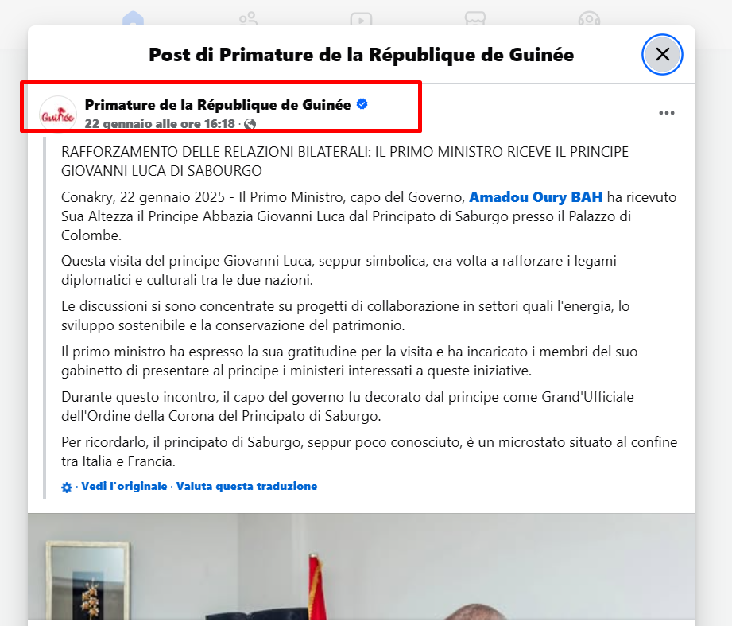
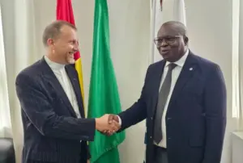
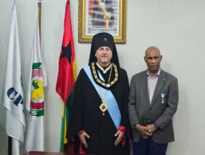
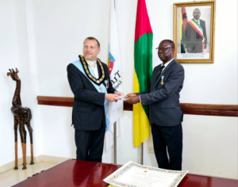
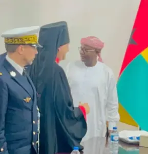
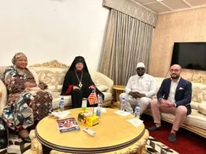
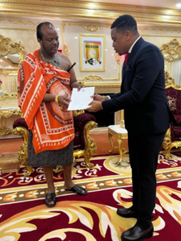
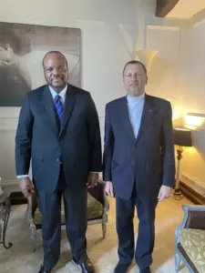

<?xml version="1.0" encoding="UTF-8"?><rss version="2.0"
	xmlns:content="http://purl.org/rss/1.0/modules/content/"
	xmlns:wfw="http://wellformedweb.org/CommentAPI/"
	xmlns:dc="http://purl.org/dc/elements/1.1/"
	xmlns:atom="http://www.w3.org/2005/Atom"
	xmlns:sy="http://purl.org/rss/1.0/modules/syndication/"
	xmlns:slash="http://purl.org/rss/1.0/modules/slash/"
	>

<channel>
	<title>Diplomazia &#8211; Sabourg</title>
	<atom:link href="../../../../it/category/diplomazia/feed/" rel="self" type="application/rss+xml" />
	<link>https://www.sabourg.com</link>
	<description></description>
	<lastBuildDate>Fri, 19 Dec 2025 17:35:43 +0000</lastBuildDate>
	<language>it-IT</language>
	<sy:updatePeriod>
	hourly	</sy:updatePeriod>
	<sy:updateFrequency>
	1	</sy:updateFrequency>
	<generator>https://wordpress.org/?v=6.9</generator>
	<item>
		<title>Riconoscimento della sovranità del Sabourg da parte del Camerun.</title>
		<link>../../../../it/2025/11/07/riconoscimento-della-sovranita-del-sabourg-da-parte-del-camerun/</link>
		
		<dc:creator><![CDATA[admin]]></dc:creator>
		<pubDate>Fri, 07 Nov 2025 17:13:07 +0000</pubDate>
				<category><![CDATA[Diplomazia]]></category>
		<guid isPermaLink="false">../../../../?p=1533</guid>

					<description><![CDATA[Il 27 ottobre 2025 è stato rieletto S.E. Paul Biya alla presidenza del Camerun. Durante il TG di 4vision del 31 ottobre delle ore 20 sono state lette pubblicamente le lettere di congratulazione del Sabourg e di altri tre stati: Spagna, Belgio e Russia. Segnale che conferma ulteriormente la credibilità del Sabourg nell&#8217;Africa equatoriale, considerato &#8230;]]></description>
										<content:encoded><![CDATA[<p>Il 27 ottobre 2025 è stato rieletto S.E. Paul Biya alla presidenza del Camerun.<br />
Durante il TG di 4vision del 31 ottobre delle ore 20 sono state lette pubblicamente<br />
le lettere di congratulazione del Sabourg e di altri tre stati: Spagna, Belgio e Russia.<br />
Segnale che conferma ulteriormente la credibilità del Sabourg nell&#8217;Africa equatoriale, considerato<br />
dalla Repubblica del Camerun una sovranità al pari di Spagna, Belgio e Russia.</p>
]]></content:encoded>
					
		
		
			</item>
		<item>
		<title>DALLA CINA TECNOLOGIA E SPIRITUALITA&#8217;</title>
		<link>../../../../it/2025/06/06/dalla-cina-tecnologia-e-spiritualita/</link>
		
		<dc:creator><![CDATA[admin]]></dc:creator>
		<pubDate>Fri, 06 Jun 2025 16:27:54 +0000</pubDate>
				<category><![CDATA[Diplomazia]]></category>
		<guid isPermaLink="false">../../../../?p=1370</guid>

					<description><![CDATA[Continuano le missioni estere del Principe-Abate del Sabourg Mons. Giovanni Luca. Dal 25 maggio al 1 giugno 2025 l&#8217;Arcivescovo del Sabourg era in visita a Ningbo in Cina e nei territori limitrofi. La visita è stata pianificata dal Ministero dell&#8217;Economia diretto da S.E. Stefano Soddu anche lui presente e che già da diverso tempo intrattiene &#8230;]]></description>
										<content:encoded><![CDATA[<p>Continuano le missioni estere del Principe-Abate del Sabourg Mons. Giovanni Luca. Dal 25 maggio al 1 giugno 2025 l&#8217;Arcivescovo del Sabourg era in visita a Ningbo in Cina e nei territori limitrofi. La visita è stata pianificata dal Ministero dell&#8217;Economia diretto da S.E. Stefano Soddu anche lui presente e che già da diverso tempo intrattiene rapporti di collaborazione economici tra la Cina e il Sabourg e coadiuvato dall&#8217;attuale Ministro incaricato alla cooperazione asiatica, Renain Chen. Ningbo è il più grande porto commerciale del mondo, e il Principe del Sabourg è stato invitato come ospite d&#8217;onore in rappresentanza del Sabourg alla massima manifestazione portuale cinese il MPF 2025, Marittime Silk Road Port Cooperation Forum. All&#8217;evento era presente l&#8217;Avv. Giuseppe Giacomini per la delegazione italiana come persona di riferimento per la legislazione portuale europea.<br />
Al forum hanno partecipato i maggiori dirigenti portuali del mondo, sia per conto di istituzioni pubbliche che di compagnie private. Il Principe-Abate del Sabourg è stato raggiunto dalla presidente della Fondazione Lotus Suzhuang Huang. La mission di questa organizzazione operativa tra Los Angeles e Pechino è legata allo sviluppo di nuove tecnologie di blockchain. L&#8217;incontro conferma le intenzioni dei cinesi di cooperare col Sabourg avendo siglato nei mesi scorsi un contratto di cooperazione in previsione della crescita della Fondazione Digitale del Sabourg e del sostegno promesso ai paesi africani incontrati nei mesi scorsi.<br />
Il 29 Maggio la visita della delegazione del Sabourg si sposta nelle vicinanze di Ningbo, a Yiwu<br />
dove l&#8217;Abate del Sabourg è stato accolto dal professor Xu Zhijian, ex sindaco della città. Il Principe ha conferito la medaglia al merito per la realizzazione del più grande mercato di prodotti b2b del continente asiatico installato a Yiwu.<br />
La cerimonia di investitura è stata svolta nel Monastero buddista di Shuang Lin risalente al 520 d.c., in presenza dell&#8217;Abate del Monastero Hui Ji che ha conferito con l&#8217;Arcivescovo del Sabourg.<br />
L&#8217;Abate del Monastero orientale ha accolto l&#8217;appello del religioso sabourghese riguardo l&#8217;impellente esigenza di raggiungere l&#8217;unità tra le religioni monoteiste e le religioni orientali, in quello spirito ecumenico annunciato da Papa Leone XIV e sostenuto dall&#8217;Abate del Sabourg. L&#8217;abate di Hui Ji ha accolto la proposta dell&#8217;Abate del Sabourg e Hui Ji farà presto una visita nel Sabourg per accordare un progetto interreligioso in cooperazione con l&#8217;Istituto Ecumenico sabourghese. Il viaggio termina nella cittadina tecnologica di Hangzou per ulteriori incontri.</p>
<p>Quindi un viaggio all&#8217;insegna della spiritualità e della tecnologia: la spiritualità radicata nel Priorato di Seborga e la tecnologia promossa dal Priorato di San Michele in Ventimiglia. In merito agli sviluppi di questi progetti in Cina e di altri nel mondo vi terremo informati con ulteriori comunicati.</p>
<p><a href="../../../../wp-content/uploads/2025/06/Immagine-WhatsApp-2025-06-04-ore-16.48.20_039ab896.jpg"></a></p>
<figure id="attachment_1396" aria-describedby="caption-attachment-1396" style="width: 536px" class="wp-caption aligncenter"><a href="../../../../wp-content/uploads/2025/06/Immagine-WhatsApp-2025-06-06-ore-18.55.51_22d3f458.jpg"></a><figcaption id="caption-attachment-1396" class="wp-caption-text">Particolare del MPF</figcaption></figure>
<figure id="attachment_1376" aria-describedby="caption-attachment-1376" style="width: 546px" class="wp-caption aligncenter"><a href="../../../../wp-content/uploads/2025/06/Immagine-WhatsApp-2025-06-04-ore-16.47.13_56f058de.jpg"></a><figcaption id="caption-attachment-1376" class="wp-caption-text">Delegazione del Sabourg a Ningbo</figcaption></figure>
<figure id="attachment_1372" aria-describedby="caption-attachment-1372" style="width: 343px" class="wp-caption aligncenter"><a href="../../../../wp-content/uploads/2025/06/Immagine-WhatsApp-2025-06-04-ore-16.47.13_48a42d00.jpg"></a><figcaption id="caption-attachment-1372" class="wp-caption-text">A destra dell&#8217;Arcivescovo del Sabourg, la presidente della Fondazione Lotus Suzhuang Huang, a sinistra il Ministro della cooperazione asiatica S.E. Renain Chen.</figcaption></figure>
<figure id="attachment_1373" aria-describedby="caption-attachment-1373" style="width: 580px" class="wp-caption aligncenter"><a href="../../../../wp-content/uploads/2025/06/Immagine-WhatsApp-2025-06-04-ore-16.47.13_48a42d00.jpg"></a><figcaption id="caption-attachment-1373" class="wp-caption-text">L&#8217;Abate del Sabourg durante l&#8217;incontro con l&#8217;Abate Hui Ji</figcaption></figure>
<figure id="attachment_1374" aria-describedby="caption-attachment-1374" style="width: 583px" class="wp-caption aligncenter"><a href="../../../../wp-content/uploads/2025/06/Immagine-WhatsApp-2025-06-04-ore-16.47.13_48a42d00.jpg"></a><figcaption id="caption-attachment-1374" class="wp-caption-text">Foto di gruppo: S.E. Poddu, l&#8217;Abate del Sabourg, l&#8217;Abate Hui Ji e l&#8217;ex sindaco di Yiwu, il professor Xu Zhijian con la medaglia al Merito.</figcaption></figure>
<figure id="attachment_1371" aria-describedby="caption-attachment-1371" style="width: 578px" class="wp-caption aligncenter"><a href="../../../../wp-content/uploads/2025/06/Immagine-WhatsApp-2025-06-04-ore-17.07.22_60546f6e.jpg"></a><figcaption id="caption-attachment-1371" class="wp-caption-text">Vista del mercato b2b di Yiwu</figcaption></figure>
]]></content:encoded>
					
		
		
			</item>
		<item>
		<title>IL CONSENSO DEGLI STATI CENTRO AFRICANI AL SABOURG</title>
		<link>../../../../it/2025/05/21/il-consenso-degli-stati-centro-africani-al-sabourg/</link>
		
		<dc:creator><![CDATA[admin]]></dc:creator>
		<pubDate>Wed, 21 May 2025 13:38:36 +0000</pubDate>
				<category><![CDATA[Diplomazia]]></category>
		<category><![CDATA[Non classé]]></category>
		<guid isPermaLink="false">../../../../?p=1343</guid>

					<description><![CDATA[Il Principe Abate del Sabourg il 3 Maggio 2025 ha presenziato alla cerimonia di investitura del nuovo presidente del Gabon Brice Clotaire Oligui Nguema. La presenza del Principe del Sabourg alla cerimonia conferma che l&#8217;attività diplomatica del Sabourg nei territori centro africani non solo ha ottenuto consensi ma si è ormai consolidata e siamo in &#8230;]]></description>
										<content:encoded><![CDATA[<p>Il Principe Abate del Sabourg il 3 Maggio 2025 ha presenziato alla cerimonia di investitura del nuovo presidente del Gabon Brice Clotaire Oligui Nguema.<br />
La presenza del Principe del Sabourg alla cerimonia conferma che l&#8217;attività diplomatica del Sabourg nei territori centro africani non solo ha ottenuto consensi ma si è ormai consolidata e siamo in attesa di nuovi sviluppi nei prossimi mesi.<br />
Le foto correlate a questo articolo mostrano le innumerevoli figure istituzionali di massimo livello che il Principe del Sabourg ha incontrato in questo viaggio istituzionale nel Gabon, in primis i presidenti africani presenti nella sala Presidenziale dal Gabon.<br />
Le parole in merito al meeting dell&#8217;Arcivescovo del Sabourg sono molto più che positive:<br />
<strong><em>&#8220;Le prospettive di cooperazione con i stati centro africani sono ottime e si fondano su interessi comuni tanto che i loro capi hanno dimostrato un notevole interesse ed impegno nel riconoscimento internazionale del Sabourg quale stato sovrano, abbracciando il modello di sviluppo proposto dal Sabourg. Purtroppo gli stati africani sono oppressi da debiti accumulati con le istituzioni monetarie internazionali. Il progetto dell Sabourg prevede una progressiva autonomia degli stati mendiante una conversione intelligente delle loro risorse naturali in risorse economiche da reinvestire in opere pubbliche, senza ulteriore indebitamento. E questo avverrà con la collaborazione </em></strong><strong><em>di aziende italiane ed europee di comprovato know-out che implementeranno il modello di sviluppo del Sabourg nei loro territori&#8221;.</em></strong><br />
Il Principe-Abate del Sabourg ha inoltre incontrato la first lady del Gabon Zita Oligui Nguema presso la Fondazione Ma Bannière da lei diretta.</p>
<p>&nbsp;</p>
<figure id="attachment_1346" aria-describedby="caption-attachment-1346" style="width: 1024px" class="wp-caption aligncenter"><figcaption id="caption-attachment-1346" class="wp-caption-text"><strong>Presidente della Repubblica del CIAD S.E. Mahamat Déby Itno</strong></figcaption></figure>
<figure id="attachment_1347" aria-describedby="caption-attachment-1347" style="width: 1024px" class="wp-caption aligncenter"><figcaption id="caption-attachment-1347" class="wp-caption-text"><strong>Presidente della Repubblica Guinea Bissau S.E. Umaro Sissoco Embaló</strong></figcaption></figure>
<figure id="attachment_1348" aria-describedby="caption-attachment-1348" style="width: 1024px" class="wp-caption aligncenter"><figcaption id="caption-attachment-1348" class="wp-caption-text"><strong>Presidente della République de Sao Tomé et Principe, S.E. Carlos Vila Nova e sua moglie</strong></figcaption></figure>
<figure id="attachment_1349" aria-describedby="caption-attachment-1349" style="width: 1024px" class="wp-caption aligncenter"><figcaption id="caption-attachment-1349" class="wp-caption-text"><strong>Presidente della Repubblica della Guinea Equatoriale S.E. Teodoro Obiang Nguema Mbasogo</strong></figcaption></figure>
<figure id="attachment_1345" aria-describedby="caption-attachment-1345" style="width: 1024px" class="wp-caption aligncenter"><figcaption id="caption-attachment-1345" class="wp-caption-text"><strong>Presidente della Repubblica del  Ghana S.E. Nana Akufo-Addo </strong></figcaption></figure>
]]></content:encoded>
					
		
		
			</item>
		<item>
		<title>A LEONE XIV: &#8220;Il Santo Spirito ha ispirtato il primo appello ai popoli&#8221;</title>
		<link>../../../../it/2025/05/20/a-leone-xiv-il-santo-spirito-ha-ispirtato-il-primo-appello-ai-popoli/</link>
		
		<dc:creator><![CDATA[admin]]></dc:creator>
		<pubDate>Tue, 20 May 2025 13:43:29 +0000</pubDate>
				<category><![CDATA[Diplomazia]]></category>
		<guid isPermaLink="false">../../../../?p=1333</guid>

					<description><![CDATA[Nei giorni scorsi il Principe Abate del Sabourg Giovanni Luca ha inviato una lettera al neo Papa Leone XIV a nome del Principato e di tutti i cittadini religiosi e laici del Sabourg. E&#8217; evidente dal tenore della missiva, la stima e la fiducia che l&#8217;Arcivescovo del Sabourg nutre nei confronti di Papa Leone XIV. &#8230;]]></description>
										<content:encoded><![CDATA[<p>Nei giorni scorsi il Principe Abate del Sabourg Giovanni Luca ha inviato una lettera al neo Papa Leone XIV a nome del Principato e di tutti i cittadini religiosi e laici del Sabourg.<br />
E&#8217; evidente dal tenore della missiva, la stima e la fiducia che l&#8217;Arcivescovo del Sabourg nutre nei confronti di Papa Leone XIV.<br />
Le parole sono precise ed inequivocabili: <em>&#8220;La vostra prima allocuzione, a cui abbiamo assisto con grande interesse ed ammirazione ha dato prova che il Santo Spirito ha ispirato il primo appello ai popoli dichiarando l’urgenza di attivarsi per la pace nel mondo.&#8221;</em><br />
Inoltre nel documento il Principe indica l&#8217;analogia tra il blasone cardinalizio di Leone XIV e il blasone dell&#8217;Ordine Monastico del Sabourg: <em>&#8220;Non a caso il suo blasone cardinalizio, dal colore azzurro e bianco, rappresenta un inequivocabile segno di unione col blasone del Principato del Sabourg, primo stato monastico dell’umanità.&#8221;</em><br />
La lettera si chiude con la disponibilità del Principe-Abate ad una collaborazione attiva con la Santa Chiesa Romana e tutte le istituzioni principali coinvolte nei processi di pace, per esaudire quelle parole profetizzate nel Santo Vangelo di Giovanni racchiuse nella frase: &#8220;<strong>Ut Unum Sint&#8221;</strong>, parafrasi di <strong>&#8220;In Illo Uno Unum&#8221;</strong>, citato nel blasone del nuovo Papa.<br />
Quindi si potrebbe prospettare, in futuro, un incontro tra Papa Leone XIV e l&#8217;Arcivescovo del Sabourg riguardante la pace nel mondo.</p>
<p></p>
]]></content:encoded>
					
		
		
			</item>
		<item>
		<title>Il Principe-Abbate Giovanni Luca ha partecipato alla cerimonia di insediamento del neoeletto Presidente del Gabon, Brice Clotaire Oligui Nguema.</title>
		<link>../../../../it/2025/05/06/il-principe-abbate-giovanni-luca-ha-partecipato-alla-cerimonia-di-insediamento-del-neoeletto-presidente-del-gabon-brice-clotaire-oligui-nguema/</link>
		
		<dc:creator><![CDATA[admin]]></dc:creator>
		<pubDate>Tue, 06 May 2025 10:10:19 +0000</pubDate>
				<category><![CDATA[Diplomazia]]></category>
		<guid isPermaLink="false">../../../../?p=1326</guid>

					<description><![CDATA[Il Principe-Abbate Giovanni Luca ha partecipato alla cerimonia di insediamento del neoeletto Presidente del Gabon, Brice Clotaire Oligui Nguema. Si è trattato di una cerimonia solenne e simbolica, in cui il nuovo Presidente della Repubblica gabonese ha prestato giuramento davanti alle massime autorità del Paese, a una delegazione del popolo gabonese e a diversi capi &#8230;]]></description>
										<content:encoded><![CDATA[<p>Il Principe-Abbate Giovanni Luca ha partecipato alla cerimonia di insediamento del neoeletto Presidente del Gabon, Brice Clotaire Oligui Nguema.</p>
<p>Si è trattato di una cerimonia solenne e simbolica, in cui il nuovo Presidente della Repubblica gabonese ha prestato giuramento davanti alle massime autorità del Paese, a una delegazione del popolo gabonese e a diversi capi di Stato africani venuti a manifestare il loro sostegno.</p>
<p>Il Presidente Brice Clotaire Oligui Nguema ha giurato di rispettare e far rispettare la Costituzione, di preservare l&#8217;unità nazionale e di lavorare instancabilmente per la pace, la giustizia e lo sviluppo del Gabon, tendendo la mano a tutte le forze dinamiche della nazione. Ha auspicato “una nuova era di responsabilità, trasparenza e ricostruzione collettiva”, sottolineando la necessità di rafforzare l&#8217;integrazione regionale e la cooperazione africana.</p>
<p>Anche il Principe-Abbate del Principato del Sabourg, che sta visitando l&#8217;Africa con un&#8217;ampia delegazione nell&#8217;ambito di un programma di cooperazione Sud-Sud, ha auspicato una “nuova era di responsabilità, trasparenza e ricostruzione collettiva”.</p>
<p></p>
]]></content:encoded>
					
		
		
			</item>
		<item>
		<title>PAPA FRANCESCO HA LASCIATO UN SEGNO INDELEBILE DI PACE, GIUSTIZIA E MISERICORDIA</title>
		<link>../../../../it/2025/04/22/papa-francesco-ha-lasciato-un-segno-indelebile-di-pace-giustizia-e-misericordia/</link>
		
		<dc:creator><![CDATA[admin]]></dc:creator>
		<pubDate>Tue, 22 Apr 2025 16:14:54 +0000</pubDate>
				<category><![CDATA[Diplomazia]]></category>
		<guid isPermaLink="false">../../../../?p=1314</guid>

					<description><![CDATA[A Sua Eminenza Reverendissima il Cardinale Pietro Parolin, Segretario di Stato Città del Vaticano Santa Sede Nel giorno successivo alla commemorazione di Resurrezione di Nostro Signore, con profonda tristezza e reverenza, si apprende la notizia della scomparsa di Sua Santità Papa Francesco, uomo di grande fede, compassione e dedizione. A nome del popolo del Sabourg &#8230;]]></description>
										<content:encoded><![CDATA[<p>A Sua Eminenza Reverendissima il Cardinale Pietro Parolin, Segretario di Stato<br />
Città del Vaticano<br />
Santa Sede</p>
<p>Nel giorno successivo alla commemorazione di Resurrezione di Nostro Signore, con profonda tristezza e reverenza, si apprende la notizia della scomparsa di Sua Santità Papa Francesco, uomo di grande fede, compassione e dedizione.<br />
A nome del popolo del Sabourg e del Clero dell’Ordine Monastico del Sabourg esprimiamo le Nostre più sentite condoglianze alla Santa Sede, ai membri del clero e a tutti i fedeli della Chiesa Cattolica Romana.<br />
Papa Francesco ha lasciato un segno indelebile nella storia della Chiesa, portando avanti con coraggio e amore un messaggio di pace, giustizia e misericordia. La sua vita di servizio e la sua capacità di unire le persone di diverse fedi sono un esempio luminoso di umanità e di speranza.<br />
Il Clero del Sabourg si unisce in preghiera con il Clero della Chiesa Cattolica Romana e con tutti coloro che hanno trovato in Papa Francesco la guida spirituale. La sua anima trovi pace nel riposo eterno, e che la sua eredità continui a ispirare i popoli a vivere con amore e compassione verso il prossimo.</p>
<p>Con affetto fraterno e alta considerazione,<br />
Mons. Giovanni Luca del Sabourg</p>
<p></p>
]]></content:encoded>
					
		
		
			</item>
		<item>
		<title>IL PRINCIPE ABATE DEL SABOURG OSPITE D’ONORE ALL’INVESTITURA UFFICIALE DEL PRESIDENTE DELLA REPUBBLICA DEL MOZAMBICO</title>
		<link>../../../../it/2025/03/06/il-principe-abate-del-sabourg-ospite-donore-allinvestitura-ufficiale-del-presidente-della-repubblica-del-mozambico/</link>
		
		<dc:creator><![CDATA[admin]]></dc:creator>
		<pubDate>Thu, 06 Mar 2025 14:11:31 +0000</pubDate>
				<category><![CDATA[Diplomazia]]></category>
		<guid isPermaLink="false">../../../../?p=1244</guid>

					<description><![CDATA[Il Principe del Sabourg Giovanni Luca il 15 Gennaio 2025 ha presenziato su invito delle Autorità del Mozambico all’investitura del Presidente della Repubblica del Mozambico S.E. Daniel Chapo. Erano tra gli ospiti d’onore il Presidente del Sud Africa S.E. Cyril Ramaphosa,, Presidente della Guinea Bissau S.E. Umaro Sissoo Embalo, altre personalità e istituzioni politiche e &#8230;]]></description>
										<content:encoded><![CDATA[<p>Il Principe del Sabourg Giovanni Luca il 15 Gennaio 2025 ha presenziato su invito delle Autorità del Mozambico all’investitura del Presidente della Repubblica del Mozambico S.E. Daniel Chapo. Erano tra gli ospiti d’onore il Presidente del Sud Africa S.E. Cyril Ramaphosa,, Presidente della Guinea Bissau S.E. Umaro Sissoo Embalo, altre personalità e istituzioni politiche e diplomatiche estere, tra cui citiamo: S.E. Fortune Z. Charumbira, Presidente del Parlamento dell’Unione Africana Ministro Affari Esteri del Portogallo, Paulo Rangel (nella foto a sinistra del Principe-Abate) Dammu Ravi, Segretario delle Relazioni Economiche del Ministero degli Affari Esteri dell’India (a destra del Principe-Abate).</p>
<p>Le dichiarazione a favore del nuovo Presidente da parte del Principe-Abate al termine della cerimonia svolta a Maputo: <em>“S.E. Daniel Chapo è un riformatore, che procede verso uno consistente snellimento burocratico per contrastare la corruzione, per dare al Suo Popolo dignità e futuro, sia sul piano umano che tecnologico”</em>.</p>
<p></p>
<p><iframe loading="lazy" title="Toma de Posse: Filipe Nyusi faz último discurso como Presidente da República de Moçambique" width="1220" height="686" src="https://www.youtube.com/embed/sVi8OOqi0ZA?feature=oembed" frameborder="0" allow="accelerometer; autoplay; clipboard-write; encrypted-media; gyroscope; picture-in-picture; web-share" referrerpolicy="strict-origin-when-cross-origin" allowfullscreen></iframe></p>
]]></content:encoded>
					
		
		
			</item>
		<item>
		<title>IL PRINCIPE ABATE DEL SABOURG RICEVUTO UFFICIALMENTE DAL PRIMO MINISTRO DELLA GUINEA CONAKRY</title>
		<link>../../../../it/2025/01/23/comunicato-stampa-del-23-gennaio-2025-il-principe-abate-del-sabourg-ricevuto-ufficialmente-dal-primo-ministro-della-guinea-conakry/</link>
		
		<dc:creator><![CDATA[admin]]></dc:creator>
		<pubDate>Thu, 23 Jan 2025 13:41:02 +0000</pubDate>
				<category><![CDATA[Diplomazia]]></category>
		<guid isPermaLink="false">../../../../?p=1199</guid>

					<description><![CDATA[Il giorno 22 gennaio il Pricipe-Abate del Sabourg Giovanni Luca è stato ricevuto in via ufficiale da S.E. Amadou Oury BAH Primo Ministro Capo del Governo della Guinea Conakry. L’incontro ha avuto come scopo l’intessitura di relazioni ufficiali tra i due stati su diversi fronti per stabilire una cooperazione internazionale bilaterale. Il Principe-Abate ha espresso &#8230;]]></description>
										<content:encoded><![CDATA[<p>Il giorno 22 gennaio il Pricipe-Abate del Sabourg Giovanni Luca è stato ricevuto in via ufficiale da S.E. Amadou Oury BAH Primo Ministro Capo del Governo della Guinea Conakry.<br />
L’incontro ha avuto come scopo l’intessitura di relazioni ufficiali tra i due stati su diversi fronti per stabilire una cooperazione internazionale bilaterale.</p>
<p>Il Principe-Abate ha espresso gratitudine al Primo Ministro S.E. Amadou Oury BAH per l’importante incontro avvenuto a Conakry: <strong><em>“C’è stata da entrambi una forte intesa, che sicuramente permetterà di dar vita a progetti sinergici e rilevanti con la Guinea con il sostegno del Principato del Sabourg”.</em></strong></p>
<p>A seguire il Principe del Sabourg è stato ricevuto dal Ministro direttore di Gabinetto del Primo Ministro Mohamed Lamine Sy Savanè. Successivamente dal Ministro dell’urbanistica e sviluppo territoriale Mory Conde ed infine ha incontrato il Ministro della pianificazione della cooperazione internazionale M. Ismael Nabe.</p>
<p>Il Primo Ministro è stato decorato Grand Ufficiale dell’Ordine della Corona dal Principe Giovanni Luca e i Ministri sopra citati decorati con rango di Cavaliere.</p>
<p>Il Principe-Abate si è recato per una visita di cortesia all’Arcivescovo della Arcidiocesi di Conakry S.E. Mgr. Vincent Coulibaly e successivamente alla Grande Moschea di Conakry per essere ricevuto dal Consiglio degli Imam che ha donato al Principe del Sabourg il Corano a simbolo della fratellanza religiosa.</p>
<p>La missione ufficiale nella Guinea Conakry ha culminato con la visita ufficiale al Presidente del Consiglio Nazionale di Transizione S..E. Dr. Dansa Kouoma e suoi consiglieri.<br />
Il presidente del CNT ha consegnato al Principe-Abate con una copia della loro Costituzione che sarà adottata a breve.<br />
Il sovrano del Sabourg afferma: <em><strong>“è un gran privilegio che conferma la visione futuristica che pone il Principato del Sabourg come partner strategico per lo sviluppo economico, la cooperazione internazionale e l’interazione religiosa nel continente africano”.</strong></em></p>
<p></p>
<figure id="attachment_1228" aria-describedby="caption-attachment-1228" style="width: 300px" class="wp-caption aligncenter"><figcaption id="caption-attachment-1228" class="wp-caption-text">Visita al Primo Ministro a Conakry</figcaption></figure>
<p> </p>
<figure id="attachment_1237" aria-describedby="caption-attachment-1237" style="width: 300px" class="wp-caption aligncenter"><figcaption id="caption-attachment-1237" class="wp-caption-text">Decorazione del Primo Ministro S.E. Amadou Oury BAH e dei suoi Ministri</figcaption></figure>
<figure id="attachment_1236" aria-describedby="caption-attachment-1236" style="width: 300px" class="wp-caption aligncenter"><figcaption id="caption-attachment-1236" class="wp-caption-text">Visita alla Grande Moschea con il Corano donato</figcaption></figure>
<figure id="attachment_1238" aria-describedby="caption-attachment-1238" style="width: 300px" class="wp-caption aligncenter"><figcaption id="caption-attachment-1238" class="wp-caption-text">Visita all’Arcivescovo S.E. Mgr. Vincent Coulibaly</figcaption></figure>
<p><a href="https://www.facebook.com/share/1FHQiDxDGB/" target="_blank" rel="noopener"></a></p>
]]></content:encoded>
					
		
		
			</item>
		<item>
		<title>Il Principe-Abate del Sabourg è stato ricevuto capo di stato in Africa</title>
		<link>../../../../it/2024/12/13/il-principe-abate-del-sabourg-e-stato-ricevuto-capo-di-stato-in-africa/</link>
		
		<dc:creator><![CDATA[admin]]></dc:creator>
		<pubDate>Fri, 13 Dec 2024 14:11:50 +0000</pubDate>
				<category><![CDATA[Diplomazia]]></category>
		<guid isPermaLink="false">../../../../?p=1246</guid>

					<description><![CDATA[La notizia è stata rilasciata da Sua Altezza Reverendissima Mons. Giovanni Luca, Principe-Abate Arcivescovo del Sabourg, (al secolo Mons. Gianluca de Lucia) nel corso della conferenza pubblica tenutasi venerdì 13 dicembre a Ventimiglia in occasione della Festa nazionale del Sabourg, dal titolo: “Il Principato del Sabourg nel 2024, una sovranità riconosciuta nel mondo”. Queste sono &#8230;]]></description>
										<content:encoded><![CDATA[<div class="wpb_text_column wpb_content_element ">
<div class="wpb_wrapper">
<p>La notizia è stata rilasciata da Sua Altezza Reverendissima Mons. Giovanni Luca, Principe-Abate Arcivescovo del Sabourg, (al secolo Mons. Gianluca de Lucia) nel corso della conferenza pubblica tenutasi venerdì 13 dicembre a Ventimiglia in occasione della Festa nazionale del Sabourg, dal titolo: “Il Principato del Sabourg nel 2024, una sovranità riconosciuta nel mondo”.</p>
<p>Queste sono le dichiarazioni più importanti rilasciate dal Principe-Abate: “Il 2024 si è dimostrato un anno determinante per le sorti di questo antico stato abbaziale. La Guinea Bissau, la Liberia, il Regno dell’Eswatini (Swaziland) e la Repubblica Centro Africana hanno stretto contatti ufficiali con il Governo del Sabourg, finalizzati a siglare un contratto di cooperazione internazionale. A seguito di un incessante lavoro diplomatico, negli scorsi mesi, sono stato ricevuto come Capo di Stato da queste alte personalità istituzionali: il Capo di Governo della Guinea Bissau, il Ministro di Stato della Liberia, il Monarca dello Swaziland. Mentre i diplomatici del Sabourg sono stati ricevuti dal Capo di Stato della Repubblica Centrafricana. Il primo contratto di cooperazione è stato siglato a Bissau il 13 settembre 2024 per impostare una serie di progetti seri e determinanti per il futuro di questo paese in via di sviluppo. Sono in corso trattative al fine di formalizzare altri contratti di cooperazione internazionale, non appena saranno conclusi vi daremo comunicazione. Il Sabourg che ha da poco iniziato un censimento generale non è solo una realtà esistente nei Priorati siti a Seborga e a Ventimiglia, ma si sta attivando con attività diplomatiche con altre nazioni al fine di sostenere i paesi in via di sviluppo con progetti concreti .</p>
<p>Essendo uno stato religioso franco-italiano, vuole rafforzare i rapporti di cooperazione transfrontaliera tra Italia e Francia dato che il territorio del comune di Sospel (Francia) era parte integrante dell’antico Principato del Sabourg. Ritengo che sia giunto il tempo di rendere pubblica la nostra attività diplomatica e governativa. I cittadini italiani, francesi ed europei devono sapere che esiste il Principato del Sabourg, primo stato abbaziale dell’umanità, legittimamente ricostituito da cinque anni da una congregazione religiosa di ispirazione benedettina denominata “Ordine Monastico di Seborga “ incardinata in un ente di culto monegasco.</p>
<p>La nostra realtà governativa, snobbata dai media è sovente confusa con un’associazione di promozione turistica locale denominata “Principato di Seborga”, retta da una cittadina tedesca, coadiuvata da un gruppo di cittadini italiani. Il nostro intento è rivolto a far comprendere che tale associazione sita a Seborga non ha nulla a che vedere il Principato del Sabourg.</p>
<p>Il fondatore di questa lodevole iniziativa a fini turistici è riconosciuto da una targa commemorativa come ideatore di realtà passate, parafrasando miti e leggende che nulla hanno a che vedere con l’origine del Principato del Sabourg, nato nel 1261 per volere papale, non imperiale.</p>
<p>Ancora il Principe-Abate del Sabourg ha parlato del carattere internazionale dello stato: Il Principato oggi vuole diventare una comunità spirituale molto vasta, attenta all’integrazione inter-religiosa, al fine di estendere la propria azione di costituzione di comunità spirituali al di fuori dei propri confini territoriali quale modello di vita terziaria con grande rispetto delle risorse naturali, della salvaguardia del genere umano con attenzione allo sviluppo tecnologico e digitale.</p>
<p>In conclusione il Principe-Abate ha voluto rassicurare i presenti dell’auspicio di voler intavolare buoni rapporti con la Repubblica Italiana: “La nostra idea sin dal 2019 è volta ad ottenere un’autonomia dei terreni oggetto di un protettorato istituito dal Pontefice Romano ai Savoia da più di tre secoli, a nostro intendimento mai destituita. Noi non vogliamo scontrarci con il Governo Italiano riguardo le ragioni della nostra esistenza, ma esporre le potenzialità del Sabourg e promuovere un accordo di cooperazione con il quale viene conferito al Principato del Sabourg un’autonomia speciale dei territori oggetto del protettorato, esercitato dalla Repubblica Italiana dal 1946. Questo perché il Principato del Sabourg vuole condividere la propria autonomia con il popolo italiano al fine di creare vantaggi per entrambi. Sia chiaro a tutti, parlo di autonomia e non di indipendenza, perché l’indipendenza è un concetto ormai superato dalla costituzione di istituzioni che riuniscono più stati come la Comunità Europea. Estendo un invito a tutti coloro che ancora non conoscono il Sabourg: “occorre sottolineare che non siamo una invenzione turistica e nemmeno vogliamo coinvolgere le persone in progetti geo-politici improbabili. Non è più tempo di utopie e di sagre paesane. Abbiamo dimostrato che il Sabourg esiste nel 2024 come già esisteva nel 1261. Seguite le nostre azioni di governo consultando frequentemente il nostro sito web: seborga.org.</p>
<figure id="attachment_1247" aria-describedby="caption-attachment-1247" style="width: 1024px" class="wp-caption aligncenter"><figcaption id="caption-attachment-1247" class="wp-caption-text">Il Principe-Abate ospite d’onore al Forum Internazionale di Sviluppo Economico in presenza di tutte le alte cariche del Governo</figcaption></figure>
<div class="wpb_text_column wpb_content_element ">
<div class="wpb_wrapper">
<p style="text-align: center;"><strong>GUINEA BISSAU </strong><strong>9-13 Settembre 2024</strong></p>
<figure id="attachment_1249" aria-describedby="caption-attachment-1249" style="width: 300px" class="wp-caption aligncenter"><figcaption id="caption-attachment-1249" class="wp-caption-text">Ricezione ufficiale dal delegato del Governo S.E. Aristides Ocante Da Silva, Ministro dell’Amministrazione Territoriale</figcaption></figure>
</div>
</div>
<figure id="attachment_1250" aria-describedby="caption-attachment-1250" style="width: 300px" class="wp-caption aligncenter"><figcaption id="caption-attachment-1250" class="wp-caption-text">Ricevimento ufficiale e decorazione del Primo Ministro S.E. Rui Duarte Barros</figcaption></figure>
<figure id="attachment_1251" aria-describedby="caption-attachment-1251" style="width: 300px" class="wp-caption aligncenter"><figcaption id="caption-attachment-1251" class="wp-caption-text">Incontro e decorazione del Ministro del Turismo, S.E. Alberto Demba Turé</figcaption></figure>
<figure id="attachment_1252" aria-describedby="caption-attachment-1252" style="width: 289px" class="wp-caption aligncenter"><figcaption id="caption-attachment-1252" class="wp-caption-text">Incontro ufficiale col Presidente della Repubblica, S.E. Umaro Sissoco Embalò</figcaption></figure>
<div class="wpb_text_column wpb_content_element ">
<div class="wpb_wrapper">
<p>&nbsp;</p>
<p style="text-align: center;"><strong>LIBERIA </strong><strong>15 Settembre 2024</strong></p>
</div>
<figure id="attachment_1253" aria-describedby="caption-attachment-1253" style="width: 300px" class="wp-caption aligncenter"><figcaption id="caption-attachment-1253" class="wp-caption-text">Ricevimento ufficiale all’aereoporto di Monrovia dal Ministro di Stato della Liberia S.E. Sig.ra Mamaka Bility e il Consigliere Speciale delegato dal Presidente della Repubblica, S. E. Sheikh A. Kouyateh. in presenza del Direttore dell’Agezia di Sviluppo Economico del Sabourg, S.E. Claudio Genovese e del Consigliere Diplomatico Boubacar Oumar Ba.</figcaption></figure>
</div>
</div>
</div>
<p>&nbsp;</p>
<div class="wpb_text_column wpb_content_element ">
<div class="wpb_wrapper">
<p style="text-align: center;"><strong>MBABANE </strong><strong>26 Settembre 2024</strong></p>
<figure id="attachment_1254" aria-describedby="caption-attachment-1254" style="width: 225px" class="wp-caption aligncenter"><figcaption id="caption-attachment-1254" class="wp-caption-text">Ricevimento delle credenziali di S.E. Lucien Kouassi Kouadio Ambasciatore Plenipotenziario presso la Corona del 26 settembre a Mbabane, regno dello Swaziland con Sua Maestà Maswati III</figcaption></figure>
</div>
<div class="wpb_text_column wpb_content_element ">
<div class="wpb_wrapper">
<p>&nbsp;</p>
<p style="text-align: center;"><strong>ROMA </strong><strong>15 Ottobre 2024</strong></p>
<figure id="attachment_1248" aria-describedby="caption-attachment-1248" style="width: 225px" class="wp-caption aligncenter"><figcaption id="caption-attachment-1248" class="wp-caption-text">Incontro ufficiale del 15 ottobre 2024 con Sua Maestà Maswati III a Roma in occasione della riunione annuale della FAO a seguito della ricezione ufficiale a Mbabane del nostro Ambasciatore Plenipotenziario presso la Corona S.E. Lucien Kouassi Kouad</figcaption></figure>
</div>
</div>
</div>
]]></content:encoded>
					
		
		
			</item>
	</channel>
</rss>
